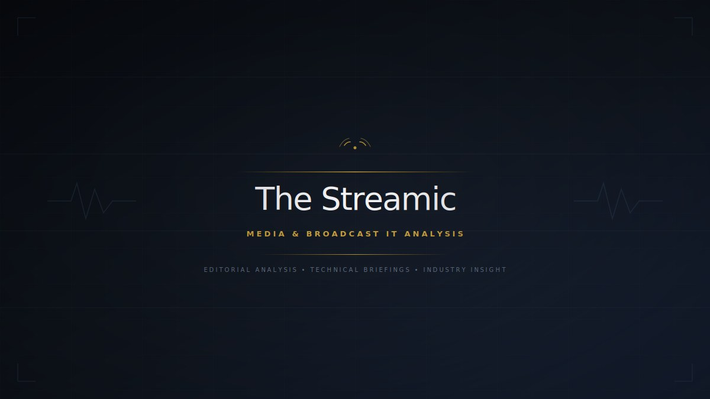

Integrating Vizrt Graphics with Avid MediaCentral and iNEWS
Configure the Vizrt Plugin for MediaCentral and the MOS Gateway to connect Viz Engine templates to iNEWS stories for story-driven graphics playout.

Integrating Vizrt Graphics with Avid MediaCentral and iNEWS is a practical operations guide focused on newsroom graphics integration driven by MOS and rundown metadata. In many broadcast and post environments, the failure point is not the headline feature itself. It is the handoff between systems, the small configuration mismatch that is left undocumented, or the assumption that the next team in the chain sees the same metadata and media state you do. This guide is written to reduce those avoidable failures and to make the workflow repeatable for engineering, editorial, and support teams.
The workflow surface here spans Vizrt, Viz Engine, Avid MediaCentral, iNEWS, MOS Gateway, templates, and newsroom graphics control. That means the right approach is never just to click through a setup screen and hope for the best. You need to confirm media paths, naming discipline, timecode consistency, codec expectations, permissions, and rollback options before a change touches live or deadline-driven work. The safer mindset is to treat every workflow as a chain. If one link is weak, the issue usually appears downstream where it is harder to diagnose.
What this guide is designed to solve
Configure the Vizrt Plugin for MediaCentral and the MOS Gateway to connect Viz Engine templates to iNEWS stories for story-driven graphics playout. The goal is not just to complete a one-time setup. The goal is to build a method that another operator, engineer, or assistant editor can follow later without re-learning the environment from scratch. That is what makes a workflow operationally useful. A reliable guide should tell you what to validate before you begin, where the common breakpoints are, and what evidence proves the workflow is actually healthy.
On The Streamic, we treat workflow documentation as part of media systems engineering. That means checking whether the process preserves timecode, metadata, file naming, path mapping, and output predictability. It also means thinking about what happens when something goes wrong: a missing plugin, a stale cache, a storage permission mismatch, or a job that appears complete but lands in the wrong format or wrong location.
Operational checkpoints
Before applying any of the steps in this guide, confirm the environment baseline. Verify software versions, plugin compatibility, storage visibility, account permissions, and any required service health. If the workflow touches shared storage or cloud targets, confirm write access and naming conventions first. If the workflow passes between editorial and engineering teams, decide who owns validation at each stage so an error is caught early instead of after delivery.
- Confirm source and destination paths before testing with real material.
- Validate timecode, audio mapping, and expected file format on a short reference asset.
- Check logs, job history, or status panels rather than relying only on UI success messages.
- Document the rollback step before changing a working production workflow.
Why this matters in real broadcast operations
Broadcast and media teams rarely fail because they lack features. They fail because a workflow behaves differently under deadline pressure than it did in a controlled test. A post pipeline may appear stable until a late metadata change, a path remap, or a codec exception forces manual intervention. That is why the most valuable workflow guides are explicit, boring, and repeatable. They reduce heroics. They reduce assumptions. They make the system easier to support at 02:00 when a deadline leaves no room for guesswork.
This guide therefore sits in the practical middle ground between vendor documentation and real facility operations. Vendor documentation explains what the product can do. An operational guide explains what the facility must confirm so the workflow holds together under real usage. That distinction matters for post-production, newsroom support, and any environment where one missed detail can cascade into rework.
Engineering note
Use this guide as a baseline and adapt it to your own site standards. If your facility already has naming rules, storage tiering, approval gates, or service-monitoring practices, map the workflow into those rather than creating one more isolated exception. The best workflow is the one your team can support consistently. That is the standard this page is intended to support.